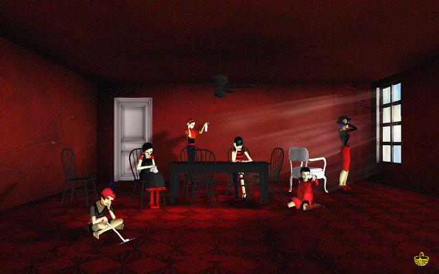

The Path es un videojuego, pero es también una de esas creaciones que se alzan con fuerza a la categoría de Arte independientemente del medio utilizado. Para acercarte a él sería interesante que olvidaras los conceptos que puedas tener en la cabeza sobre lo que es o no es un videojuego. Y si no eres una persona a quien normalmente le gusten, debes saber que te encuentras ante una excepción a la que merece la pena dar una oportunidad.
Podríamos intentar definir The Path como "terror psicológico", pero también como un juego de exploración, y a menudo como una experiencia puramente estética. Dejarte ir por el bosque mientras la cámara se eleva y pierdes el sentido de la orientación sin importarte adónde vas, paladeando los placeres de una experiencia de vida sin rumbo.
Y es importante esto de perderte cuando juegas a The Path.
Puedes elegir a cualquiera entre seis hermanas. Todas vestidas de rojo y negro, viven en un apartamento en la ciudad. Su abuelita está enferma en la cama, y vive allá en el fondo del bosque... ¡un lugar peligroso, si te sales del camino!. Pues hay lobos que se ocultan y que no hacen otra cosa que esperar que las niñas pequeñas se aparten del sendero para saltar sobre ellas. ¿Dónde vas Caperucita Roja?
El camino es tan aburrido... tan recto... ¿será verdad que hay tantos peligros cuando te sales del sendero marcado? Si obedeces estarás segura, ¿pero y si hay algo que merezca la pena ver cuando te pierdes?

La lengua más dulce tiene los dientes más afilados
Seis jóvenes, y el desgarro de la inocencia en su paso de niñas a adultas.
Ellas, entre los 9 y los 19 años, cada una con su personalidad y con su némesis, su lobo. Y aunque el jugador puede controlar sus pasos, realmente lo que sucede es consecuencia de las decisiones que ellas toman. Cada una tiene su personalidad, y parte del juego consiste en conocerlas, en intentar entender a cada una de ellas. Las haces andar y las acompañas y podeis alegraros y sufrir juntos, pero al final son ellas quienes realmente interactúan con su entorno: así que hay momentos en los que sólo puedes dejarte ir, y ver lo que sucede.
El lobo pregunta:
- ¿Qué camino vas a tomar, el camino de las agujas o el de los alfileres?
Para los folkloristas que han analizado el simbolismo de este cuento de origen francés, el camino de las agujas que Caperucita Roja suele elegir podría significar el desviarse del camino "apropiado" e ir en contra de las convenciones sociales, vivir en libertad: y por eso se le recompensa con el lobo. ¡Cuidado niñas!. La aguja es la rebelde y es la prostituta. El camino de los alfileres es el correcto para una señorita, y desembocará sin incidentes en la casa de la abuelita.
Sin embargo, la mansedumbre sólo es premiada en apariencia. Una mentira conveniente. La realidad es que no hay diferencia entre caminar sobre alfileres y hacerlo sobre agujas. Ambos caminos pinchan. ¿Qué sentido tiene entonces someterse?
El apagón. Siempre hay un apagón, y ella queda allí tumbada, y llueve. ¿Qué ha sucedido entre medias?. Es posible que la intención en The Path sea que nosotros lo rellenemos, y quizá eso es también lo que produce una atmósfera tan terrible: que ocupan el hueco nuestras propias imaginaciones y nuestros miedos. ¿Cuál es tu lobo?. ¿Y por qué quieres encontrarte con él?.
Golpéame más fuerte, desgarra mi piel amada mía, para que pueda al fin soltarlo todo y caer. Sostenme al hacerlo Ángel mío, porque soy frágil y el mundo no ha hecho más que despedazarme, y seguirá haciéndolo. Permíteme al menos romperme a ti, arrebátame te lo ruego, antes de que lo haga otro que no me quiera. Quiébrame tú, que me amas. Tras la tempestad aguardas, bella y serena. Más allá del horror estás tú.
No se puede explicar qué es The Path. Tienes que sentirlo y dejar que te devore.
"The Path no fue un proyecto fácil de hacer. Escarba profundamente en nuestra psique y toca algunos nervios desnudos muy sensibles. Cosas de las que nos cuesta hablar. Utilizamos la creación de The Path como un rodeo a la hora de explorar estas cosas. Y un rodeo es probablemente la única manera en la que podemos hablar sobre ellas. Porque son complejas y vienen acompañadas de sentimientos contradictorios. Probablemente es bueno que el lenguaje no nos permita acercarnos a esto. El lenguaje expresa este tipo de sentimientos ambiguos con dificultad. The Path trata sobre el miedo y la duda. Y sobre abrazar ambos. Trata sobre el control. Y sobre perder el control. Sobre un deseo secreto de someterse, de dejar ir, de caer, pero orgullosamente. Una mórbida fascinación con la indefensión. La fragilidad que se convierte en nosotros porque nos hace humanos. Todos somos como esas chicas, perdidos en un bosque sin colores. En busca de nuestro lobo. Y en esa fracción de segundo, mientras sus garras nos rompen la tierna piel como un relámpago en la muerte de la noche, estamos vivos.
Conocemos la intensidad de estas emociones. Sabemos cuán perturbadoras pueden ser. Que a su lado, nada parece real. Y esto nos asusta. Porque no podemos vivir así. La intensidad es insoportable. La verdad del dolor degüella la noche de la vida con luz cegadora. Buscamos refugio en la mentira, en la máscara, en la historia, y en el juego.
No nos avergüenza.
Es el único camino que atraviesa el bosque.
Vamos allá.
[Michaël Samyn y Auriea Harvey, autores de The Path]
"
 RSS
RSS